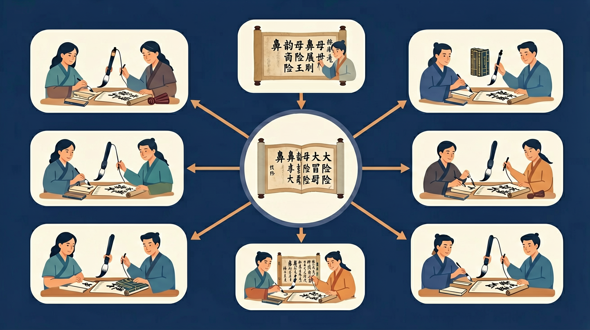

🤖 AI 多模态互动区
把你的问题告诉 AI，或上传图片让 AI 帮你分析
请输入一个词语，AI将帮你区分其中的鼻韵母是前鼻还是后鼻
点击复制此提示词 →
📎
点击或拖拽图片到这里
一起来认识会"哼哼"的韵母朋友！

看看今天的小任务，超简单的！💪
先来复习一下已经学过的单韵母 🎵
鼻韵母就是带着 n 或 ng 结尾的韵母！
它们发音的时候，气流会从鼻子里跑出来！
就像 "哼哼" 一样～ 🐝
点击每个鼻韵母，听听它的发音！👇
发音时舌尖顶上牙床！
发音时舌根抵软腭！
👇 把下面的拼音拖到上面的框里
点击词语，看看有趣的图片和例句！
你已经学会了基本单韵母和复韵母
加上鼻音后，前鼻韵母和后鼻韵母容易混淆，尤其是南方口音地区的同学
今天通过系统对比，彻底掌握前鼻韵母和后鼻韵母的发音和书写
测一测，帮助我们了解你的基础（不计入成绩）
题1：以下哪个是前鼻韵母？
题2：以下哪个是后鼻韵母？
💡 无论答对答错，继续学习都会有收获！
和前测对比，看看你进步了多少！
题1：「明」和「民」的韵母分别是？
题2：前鼻韵母和后鼻韵母，发音时最主要的区别是什么？
💡 类比记忆：把今天的知识和你已经知道的事物联系起来，记得更牢！
❌ 常见错误
「灯」的韵母写成 en
✅ 正确做法
「灯」的韵母是 eng（dēng），eng 是后鼻韵母
🩺 错因诊断：en 发音结束时舌尖碰上齿龈（前），eng 发音结束时舌根碰软腭（后）。「盆」是 en，「风」是 eng
把你的问题告诉 AI，或上传图片让 AI 帮你分析
点击或拖拽图片到这里
回忆：今天学了哪些关键词和规则？试着说出来。
用自己的话解释今天学的核心概念，不看书能说清楚吗？
用今天的知识解决一个实际问题，或写一个新例子。
把今天的知识与已有知识联系起来：有什么共同点？有什么区别？能不能自己创造一道新题？
先独立作答，再点选项查看对错与错因。
下列词语中韵母都是前鼻音的是
读句子找出发音错误：'小英(yīn)在晴(qíng)天放风筝(zhēng)'
下列哪组字的韵母类型相同？
把后鼻韵母的字填在横线上：蜻____、____天、____风
答案：蜓、晴、迎
正确答案'蜻蜓(qīngtíng)'、'晴天(qíngtiān)'、'迎风(yíngfēng)'都含后鼻韵母-ing
补全词语：____音机、____子、____晨（需含前鼻韵母）
答案：收、裙、清
'收音机(shōuyīn)'、'裙子(qúnzi)'、'清晨(qīngchén)'含前鼻韵母-in/-un/-en
关于鼻韵母发音正确的是
录制自己朗读含前后鼻韵母的词语
❓ 为什么“天”和“田”的韵母听起来不一样？
❓ “an”和“ang”发音时舌头位置有什么区别？
❓ 怎么记住哪些字带前鼻音哪些带后鼻音？
学完这一课，这些问题你都能自信地回答。
🎯 能说出9个鼻韵母的正确发音
🎯 能判断常见字的前/后鼻音归类
🎯 能分析易混鼻韵母的发音差异
下面哪一个是鼻韵母？
前鼻音舌尖顶上门齿背，后鼻音舌根抬高
像捏住鼻子发‘嗯’是前鼻音，感冒鼻塞时发的是后鼻音
an-ang像‘安’和‘昂’，en-eng像‘恩’和‘鞥’的短促版
前鼻音发音时嘴巴微闭，后鼻音口腔张大
拼读‘风筝’时先发后鼻音‘eng’，再快速接‘zheng’
✅ 强调‘ing’舌根需抵住软腭
💡 方言中前后鼻音不分
✅ 示范从‘e’直接滑向鼻音
💡 错误拆解发音过程
口诀：前鼻音，舌尖翘；后鼻音，舌根高
类比：前鼻音像小蚂蚁爬牙齿，后鼻音像大象鼻子嗡嗡响
And：学生已掌握单韵母发音
But：发现带鼻音的韵母发音易混淆
Therefore：建立鼻韵母发音概念
鼻韵母是在单韵母后面加'n'或'ng'组成的，像小火车拖车厢！比如'an'就是单韵母'a'加'n'，发音时先张大嘴发'a'，然后舌尖顶住上牙床发'n'。注意'n'和'ng'区别：'en'（如'恩'）发音短，'eng'（如'灯'）要鼻腔震动更久。
🌍 看医生时张大嘴说'啊——'，然后突然闭嘴发'n'，就是'安'的发音；感冒鼻塞时说的'嗯？'就是'ng'的鼻音。
下面哪个是鼻韵母？
And：能认读基础鼻韵母
But：前鼻音（-n）和后鼻音（-ng）易混
Therefore：通过动作区分发音位置
前鼻音像小蚂蚁爬前门牙：发音时舌尖要碰到上牙床，比如'in'（如'音'），试试看手指摸牙齿会震动！后鼻音像大象甩长鼻子：舌根抬起抵住软腭，比如'ing'（如'鹰'），手摸喉咙会感到震动。记住数字口诀：前鼻音有5个（an en in un ün），后鼻音有4个（ang eng ing ong）。
🌍 吃冰淇淋时舌头舔到上牙是前鼻音'n'；打哈欠时喉咙发出的'嗯——'是后鼻音'ng'。
'风'的韵母属于？
And：能区分前后鼻音
But：实际拼读时容易漏鼻音
Therefore：通过游戏强化完整发音
拼读鼻韵母词语要像搭积木：声母+韵母+鼻音尾巴，缺一不可！比如'c-āo'是'操'，'c-ān'才是'餐'。玩'放大镜游戏'：读'山羊'时故意拉长'ang'（山——羊——），感受鼻腔震动3秒钟。特别注意ü-n组合：'云=y-ún'，ü上两点消失但发音不变。
🌍 说悄悄话时'门没关'变成'mén méi guān'，鼻音尾巴一定要发清楚，否则会听成'没瓜'闹笑话！
拼读'x-ǐng'是哪个字？